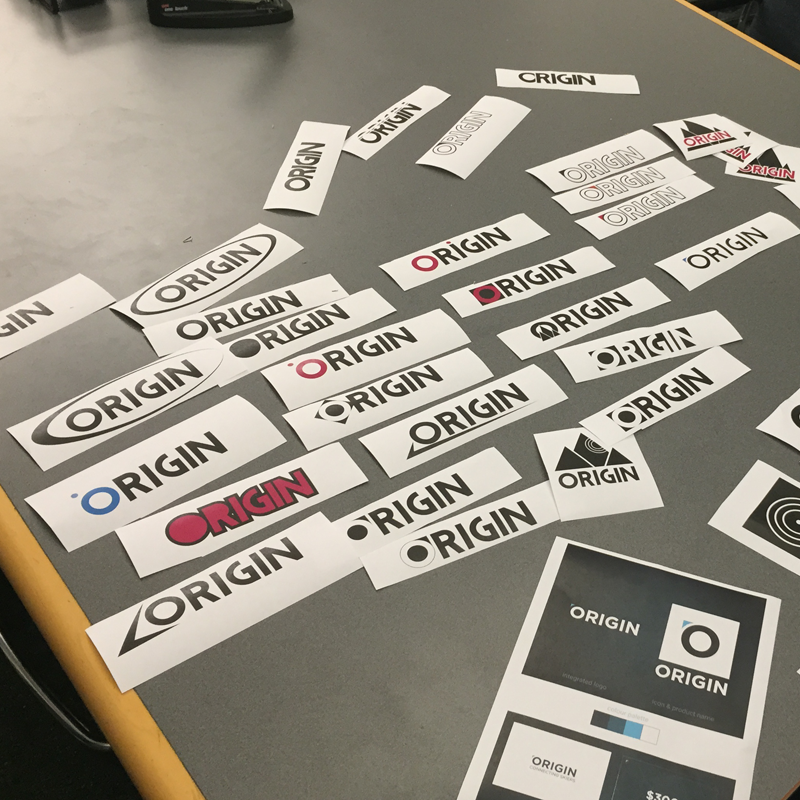

STORY
Origin, intially named Proxband, arose out of the need to help skydivers avoid canopy collisions by equipping skydivers with a wearable device such that they can effortlessly determine their distance from nearby skydivers

With all things pink, Origin's ancestors started as a young, flightless, baby bird. Development began with this metaphorical bird being powered by an Arduino, two XBees, a black and white LCD display, and a wallet-sized battery.

The form of the product began as a molded one-piece rubber assembly, enclosing an electronics container. This greatly helped with waterproofing and was easy to quickly prototype.

As our target audience shifted to skiers who wanted to know where their friends were, our physical form also changed.

We also experimented with different materials as our final form was being determined. Meanwhile, our graphic design team focused on creating an identity for Origin that would carry through the product
To reduce the size of the device, as well as to simplify the manufacturing process, the soft strap was turned down in favor of a hard-case-with-stretchy-velcro thing.

And finally, we arrived at our alpha prototype. Enjoy!
 Back to Home
Back to Home